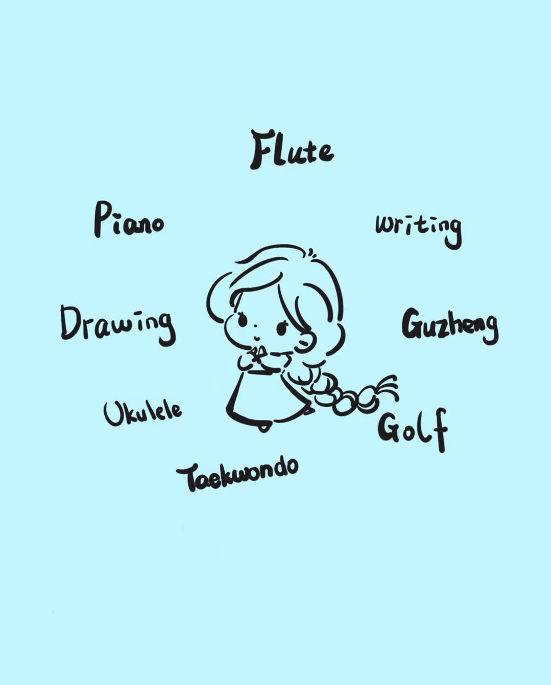
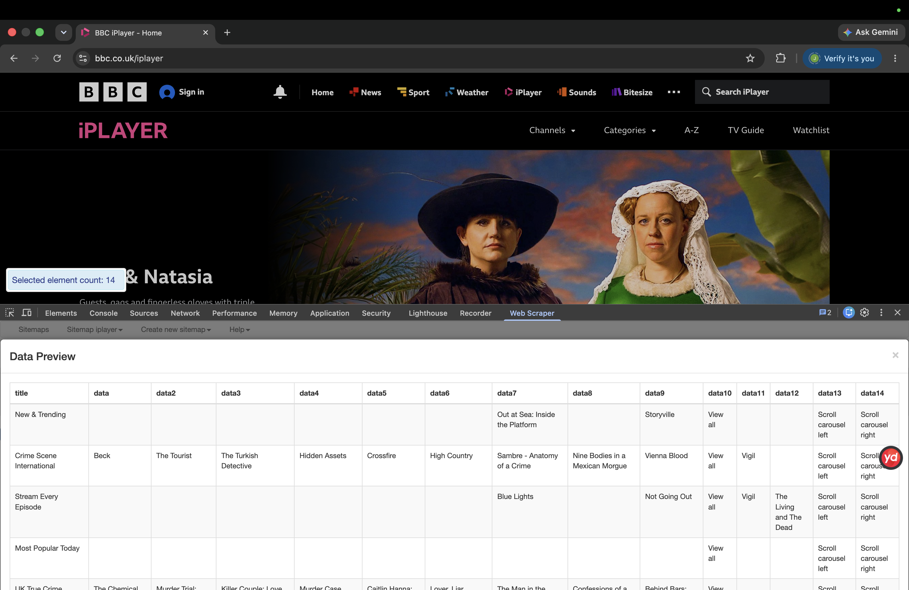

01
♡
Art & Design
Exploring visual ideas, illustration and creative expression.
✦ WELCOME TO MY WORLD ✦
Digital Media student, creative thinker and lover of art, design and beautiful things.
GET TO KNOW ME ↓DREAM · CREATE · EXPLORE

01 / ABOUT ME ♡
I am a Digital Media student at the University of Leeds. My background is in design, and I am interested in visual culture and creative expression.
I enjoy exploring visual ideas and discovering new ways to combine creativity with digital media.
DREAMER. DESIGNER. CREATIVE MIND. ♡

02 / MY INTERESTS
Little things that inspire my creativity and shape the way I see the world.
Exploring visual ideas, illustration and creative expression.
Music, artists and the emotions and stories behind them.
Style, colours and fashion as a way of expressing personality.
Discovering new places, cultures and little moments of inspiration.
03 / WEEKLY REFLECTIONS
Notes, thoughts and ideas from my experience studying Digital Media.
WEEK 01
In Week 1's lecture, we were introduced to the core ideas of digital practices. We discussed what digital media study means and what we will explore throughout this module. This session helped me understand the aims of the course before I began building my portfolio site.
The lecture opened the question of how we study digital culture. It encouraged me to look beyond digital tools and think about how people interact, create meaning and build practices online. This framing changed how I see everyday digital activities, not just as using technology.
Before this session, I only thought of social media and websites as simple tools for communication. Now I realise they are spaces shaped by human behaviours and creative practices.
WEEK 02
This week's workshop focused on creating websites with HTML and CSS. I built and deployed my portfolio site on GitHub Pages. I learned the basic structure of web pages, how to write markup, and how to host a live website online.
The Week 2 lecture explored digital networks, infrastructures, platforms and algorithms. Building my own site helped me grasp these ideas practically: every website sits on web infrastructure, and platforms like GitHub control how content gets published and visible online.
This task made me notice how every website is built by many small design choices. I now understand that platforms and web structures quietly shape what people can see and publish on the internet.
WEEK 03
This week, I started exploring web scraping and experimented with web scraping tools to gather and search for information from online sources. It was fascinating to see how data can be collected automatically from web pages, and I began to understand both the potential and ethical considerations around this practice.
This practical task showed me how creative and technical skills intersect within digital media. I found this module really engaging, and it sparked my curiosity to dive deeper into related concepts and tools.
I am eager to continue learning and explore more about web scraping, online data practices and how these techniques shape digital media environments.

WEEK 03 · Web scraping exploration